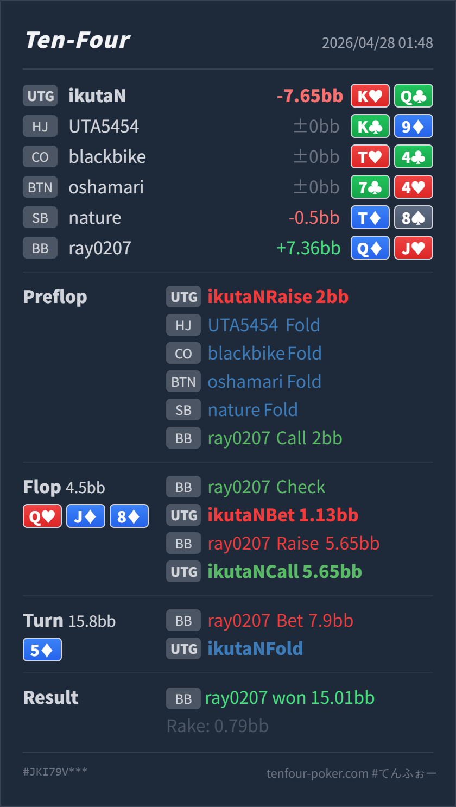

Preflop
良いK♥Q♣ は UTG open の中で十分に入る上位 broadway です。
主論点は、UTG K♥Q♣ で 2BB open し、BB call 後の flop Q♥ J♦ 8♦ で小さく c-bet、BB の check-raise 5.65BB に call し、turn 5♦ の half pot bet に fold した判断です。結論は、preflop open は良く、turn fold も自然です。見直すなら flop で、QJ8 two-tone は BB 側に two pair / straight / strong draw が多く、KQ top pair を自動で bet/call する board ではありません。
K♥Q♣Q♦J♥Q♥ J♦ 8♦ / 5♦K♥Q♣ open は自然です。flop の小さめ c-bet も候補ですが、BB の大きめ check-raise に対する call は境界寄りです。turn 5♦ で fold した判断は良いです。Q♥ J♦ 8♦ は UTG 側に AA/KK/AQ/KQ がある一方、BB 側には QJ/J8/Q8/88/T9 と diamond draw が多く、BB が強く反撃しやすい board です。K♥Q♣ は top pair good kicker ですが、diamond を持たず、straight draw もありません。flop check-raise に対して守るなら、turn の悪いカードで降りる前提が必要です。5♦ は diamond draw が完成し、BB の value range がさらに厚くなるカードです。ここで half pot を打たれた KQ no diamond は、無理に bluff-catch しなくてよいです。K♥Q♣Q♦J♥2BB, HJ fold, CO fold, BTN fold, SB fold, BB callQ♥ J♦ 8♦ / 5♦1.13BB, BB raise 5.65BB, UTG call7.9BB, UTG fold15.01BB
良いK♥Q♣ は UTG open の中で十分に入る上位 broadway です。
Q♥ J♦ 8♦悪くないが慎重KQ は top pair good kicker ですが、two pair 以上には負け、強い draw にもかなり equity を持たれます。
境界K♥Q♣ は最低限の showdown value はありますが、diamond も straight draw もなく、turn で苦しくなりやすい top pair です。
5♦良い
Hero は top pair のままですが、diamond なしで flush にも two pair 以上にも弱い bluff-catcher です。
| 論点 | その場で起きがちな見え方 | どこがズレやすいか | 次回の基準 |
|---|---|---|---|
QJ8 two-tone での c-bet | top pair なので小さく value/protection bet してよさそうに見える | この board は BB の defend range にも強く当たります。UTG は overpair を持ちますが、BB は two pair、straight、set、pair + draw を多く持てるため、小さい bet に対して check-raise が自然に発生します。 | QJ8、JT9、T98 のような連結 two-tone board では、top pair でも bet 後の check-raise 計画を先に決める |
no diamond の KQ を守る範囲 | top pair K kicker なので、raise に一度は付いていきたくなる | flop 単体では call 候補に見えますが、turn で diamond、T、9、A など嫌なカードが多く、実現率が低いです。特に no diamond は、flush 完成ターンで強く守れません。 | check-raise に続行する top pair は、kicker だけでなく diamond blocker、backdoor、turn 以降の耐性まで含めて選ぶ |
| ストリート | その時点の見え方 | 実ハンドの位置づけ | 評価 | その場の一手 |
|---|---|---|---|---|
| Preflop | UTG は狭めの range で入り、BB は価格が良いので broadway、suited、pocket をかなり defend できます。 | K♥Q♣ は UTG open の中で十分に入る上位 broadway です。 | 良い | 2BB open は問題ありません。 |
Flop Q♥ J♦ 8♦ | UTG は overpair と強い Qx を持つ一方、BB は QJ/J8/Q8/88/T9 や diamond draw を多く持てます。レンジ優位は一方的ではありません。 | KQ は top pair good kicker ですが、two pair 以上には負け、強い draw にもかなり equity を持たれます。 | 悪くないが慎重 | 小さく bet するなら、check-raise に対してどの combo を守るかを決めておきたいです。check back も自然な候補です。 |
| Flop vs check-raise | BB の 5.65BB raise は、made hand と強い draw の両方を含みます。小さい c-bet への反撃として自然な size です。 | K♥Q♣ は最低限の showdown value はありますが、diamond も straight draw もなく、turn で苦しくなりやすい top pair です。 | 境界 | 相手が draw も十分 raise するなら call は候補です。value-heavy な相手なら flop fold まで見てよいです。 |
Turn 5♦ | diamond が完成し、BB の flop check-raise range のうち強い draw が value に変わります。BB の half pot は made hand 寄りに見やすいです。 | Hero は top pair のままですが、diamond なしで flush にも two pair 以上にも弱い bluff-catcher です。 | 良い | fold でよいです。flop call を選んだとしても、この turn は無理に守るカードではありません。 |
| River |
QJ8 two-tone は BB がかなり反撃できる board です。top pair だからといって自動で bet/call しません。KQ no diamond は、flop で一度守っても、diamond turn の half pot には降りてよい hand です。turn fold は結果的にも戦略的にも自然です。Q♦J♥ で flop check-raise していました。この相手が two pair 以上を素直に強く打つタイプなら、Hero の turn fold はかなり良いです。KT/AT や diamond draw を過剰に check-raise / barrel する相手なら flop call は守れますが、その場合でも no diamond の KQ は turn の diamond 完成で継続しすぎない方が安定します。